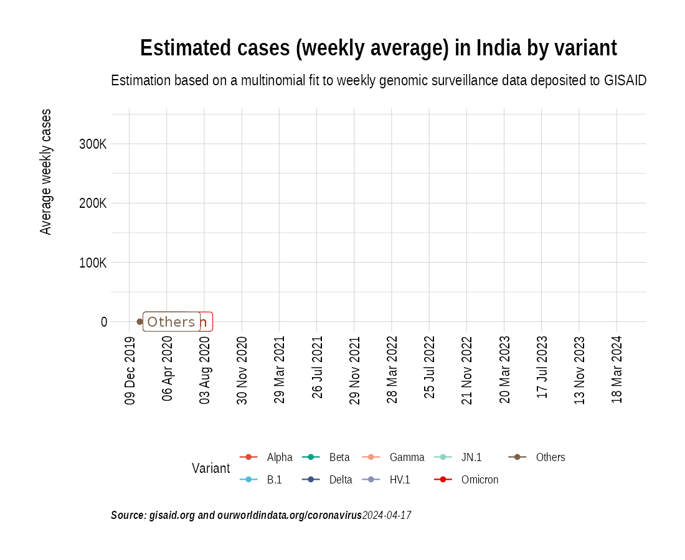
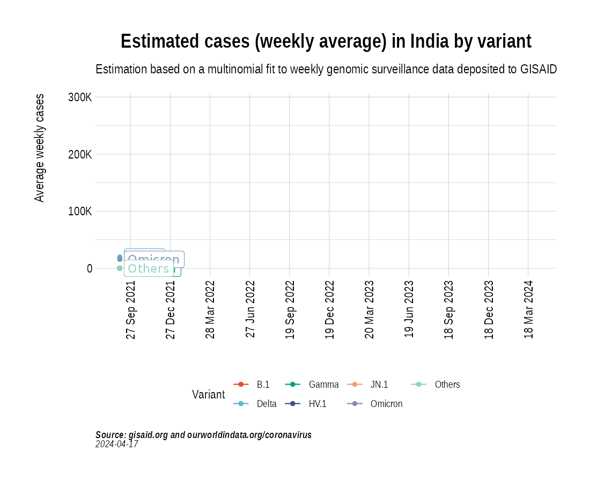
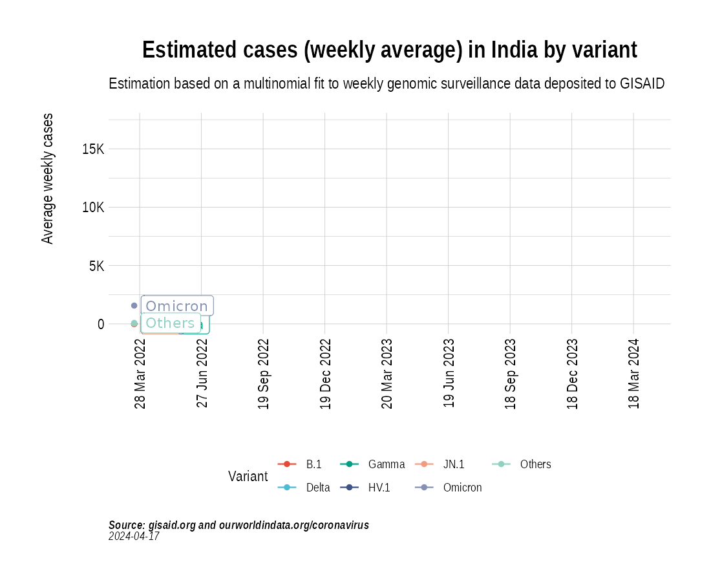

Animation of projected weekly cases - India
Source:vignettes/VariantAnimation-India.Rmd
VariantAnimation-India.Rmd
suppressPackageStartupMessages({
library(covmuller)
library(tidyverse)
})
theme_set(CovmullerTheme())Get variants data for India
gisaid_metadata <- qs::qread("~/github/2021_Covid19_surveillance/data/all_metadata/metadata_tsv_2023_02_04.qs")
gisaid_india <- FilterGISAIDIndia(gisaid_metadata_all = gisaid_metadata)
vocs <- GetVOCs()
omicron <- vocs[["omicron"]]
vocs[["omicron"]] <- NULL
custom_voc_mapping <- list(
`BA.1` = "BA.1",
`BA.1.*` = "BA.1",
`BA.2` = "BA.2",
`BA.2.*` = "BA.2",
`BA.3` = "BA.3",
`BA.3.*` = "BA.3",
`BA.4` = "BA.4",
`BA.4.*` = "BA.4",
`BA.5` = "BA.5",
`BA.5.*` = "BA.5",
`XBB` = "XBB",
`XBB.1` = "XBB.1+",
`XBB.1.*` = "XBB.1+",
`XBB.1.5` = "XBB.1.5",
`BQ.1` = "BQ.1",
`BQ.1.*` = "BQ.1"
)
gisaid_india <- gisaid_india %>%
filter(pangolin_lineage != "None") %>%
filter(pangolin_lineage != "Unassigned")
gisaid_india$District <- stringr::str_to_title(gisaid_india$District)
gisaid_india$City <- stringr::str_to_title(gisaid_india$City)
gisaid_india$custom_city <- gisaid_india$City
gisaid_india$custom_city[gisaid_india$custom_city == ""] <- gisaid_india$District[gisaid_india$custom_city == ""]
gisaid_india$custom_city <- stringr::str_to_title(gisaid_india$custom_city)
gisaid_india <- CollapseLineageToVOCs(
variant_df = gisaid_india,
vocs = vocs,
custom_voc_mapping = custom_voc_mapping,
summarize = FALSE
)Distribution of variants
state_month_counts <- SummarizeVariantsMonthwise(gisaid_india)
state_month_counts$State <- "India"
state_month_prevalence <- CountsToPrevalence(state_month_counts)
vocs <- GetVOCs()
omicron <- vocs[["omicron"]]
vocs[["omicron"]] <- NULL
state_month_prevalence <- CollapseLineageToVOCs(
variant_df = state_month_prevalence,
vocs = vocs,
custom_voc_mapping = custom_voc_mapping, summarize = FALSE
)
p5 <- StackedBarPlotPrevalence(state_month_prevalence)
p5
Get weekly cases for India
confirmed_subset_dateweekwise_long <- GetIndiaConfirmedCasesWeeklyLong()
confirmed_subset_dateweekwise_long_india <- confirmed_subset_dateweekwise_long %>%
filter(State == "India") %>%
rename(n = value) %>%
rename(WeekYearCollected = WeekYear) %>%
dplyr::select(-contains("type"))
confirmed_subset_dateweekwise_long_india$State <- NULL
gisaid_india_weekwise <- SummarizeVariantsWeekwise(gisaid_india)Project weekly cases to variant prevalence data from GISAID
voc_to_keep <- gisaid_india_weekwise %>%
group_by(lineage_collapsed) %>%
summarise(n_sum = sum(n)) %>%
filter(n_sum > 50) %>%
pull(lineage_collapsed) %>%
unique()
gisaid_india_weekwise <- gisaid_india_weekwise %>% filter(lineage_collapsed %in% voc_to_keep)
india_cases_pred_prob_sel_long <- FitMultinomWeekly(gisaid_india_weekwise, confirmed_subset_dateweekwise_long_india)## # weights: 52 (36 variable)
## initial value 583107.892077
## iter 10 value 230052.368816
## iter 20 value 204505.689059
## iter 30 value 150286.487310
## iter 40 value 128142.894947
## iter 50 value 127258.647134
## iter 60 value 126136.680419
## iter 70 value 125720.699953
## iter 80 value 125251.339214
## iter 90 value 125225.455878
## iter 100 value 125073.567481
## iter 110 value 124694.240415
## iter 120 value 124627.104300
## iter 130 value 124607.693084
## iter 140 value 124574.479462
## final value 124561.608679
## converged
the_anim <- PlotVariantPrevalenceAnimated(india_cases_pred_prob_sel_long, title = "Estimated cases (weekly average) in India by variant", caption = "**Source: gisaid.org and covid19bharat.org**", date_breaks = "28 days") # , trans_y="log10")
gganimate::anim_save(filename = here::here("docs/articles/IN_animated.gif"), animation = the_anim)
Look at cases after January, 2022 only:
confirmed_subset_dateweekwise_long <- GetIndiaConfirmedCasesWeeklyLong()
confirmed_subset_dateweekwise_long <- confirmed_subset_dateweekwise_long %>%
filter(WeekYear >= tsibble::yearweek("2021 W35")) %>%
group_by(WeekYear) %>%
summarise(n = sum(value)) %>%
arrange(WeekYear) %>%
rename(WeekYearCollected = WeekYear)
gisaid_india <- gisaid_india %>% filter(MonthYearCollected > "Dec 2021")
gisaid_weekwise <- SummarizeVariantsWeekwise(gisaid_india)
voc_to_keep <- gisaid_weekwise %>%
group_by(lineage_collapsed) %>%
summarise(n_sum = sum(n)) %>%
filter(n_sum > 50) %>%
pull(lineage_collapsed) %>%
unique()
gisaid_weekwise <- gisaid_weekwise %>% filter(lineage_collapsed %in% voc_to_keep)
cases_pred_prob_sel_long <- FitMultinomWeekly(gisaid_weekwise, confirmed_subset_dateweekwise_long)## # weights: 40 (27 variable)
## initial value 214267.055829
## iter 10 value 69456.875850
## iter 20 value 65280.617322
## iter 30 value 61886.323242
## iter 40 value 61168.881848
## iter 50 value 61046.424882
## iter 60 value 60958.931704
## iter 70 value 60940.828206
## iter 80 value 60819.201476
## iter 90 value 60794.346019
## iter 100 value 60776.530854
## iter 110 value 60768.835862
## final value 60768.775367
## converged
the_anim <- PlotVariantPrevalenceAnimated(cases_pred_prob_sel_long, title = "Estimated cases (weekly average) in India by variant", caption = "**Source: gisaid.org and covid19bharat.org**<br>") # , trans_y="log10")## `geom_line()`: Each group consists of only one observation.
## ℹ Do you need to adjust the group aesthetic?
## `geom_line()`: Each group consists of only one observation.
## ℹ Do you need to adjust the group aesthetic?
gganimate::anim_save(filename = here::here("docs/articles/IN_animated_2021.gif"), animation = the_anim)
Look at cases in the last few months:
confirmed_subset_dateweekwise_long <- GetIndiaConfirmedCasesWeeklyLong()
confirmed_subset_dateweekwise_long <- confirmed_subset_dateweekwise_long %>%
filter(WeekYear >= tsibble::yearweek("2022 W12")) %>%
group_by(WeekYear) %>%
summarise(n = sum(value)) %>%
arrange(WeekYear) %>%
rename(WeekYearCollected = WeekYear)
gisaid_india <- gisaid_india %>% filter(MonthYearCollected >= "Mar 2022")
gisaid_weekwise <- SummarizeVariantsWeekwise(gisaid_india)
voc_to_keep <- gisaid_weekwise %>%
group_by(lineage_collapsed) %>%
summarise(n_sum = sum(n)) %>%
filter(n_sum > 10) %>%
pull(lineage_collapsed) %>%
unique()
gisaid_weekwise <- gisaid_weekwise %>% filter(lineage_collapsed %in% voc_to_keep)
cases_pred_prob_sel_long <- FitMultinomWeekly(gisaid_weekwise, confirmed_subset_dateweekwise_long)## # weights: 44 (30 variable)
## initial value 106603.230143
## iter 10 value 50511.394938
## iter 20 value 38773.536349
## iter 30 value 36791.374655
## iter 40 value 36332.214207
## iter 50 value 36194.903570
## iter 60 value 36152.365728
## iter 70 value 36150.091609
## iter 80 value 36139.084983
## iter 90 value 36131.308869
## iter 100 value 36120.936726
## iter 110 value 36111.462075
## iter 120 value 36110.761891
## final value 36110.755554
## converged
the_anim <- PlotVariantPrevalenceAnimated(cases_pred_prob_sel_long, title = "Estimated cases (weekly average) in India by variant", caption = "**Source: gisaid.org and covid19bharat.org**<br>")## `geom_line()`: Each group consists of only one observation.
## ℹ Do you need to adjust the group aesthetic?
## `geom_line()`: Each group consists of only one observation.
## ℹ Do you need to adjust the group aesthetic?
gganimate::anim_save(filename = here::here("docs/articles/IN_animated_2022.gif"), animation = the_anim)
Look at cases in the last few months:
confirmed_subset_dateweekwise_long <- GetIndiaConfirmedCasesWeeklyLong()
confirmed_subset_dateweekwise_long <- confirmed_subset_dateweekwise_long %>%
filter(WeekYear >= tsibble::yearweek("2022 W39")) %>%
group_by(WeekYear) %>%
summarise(n = sum(value)) %>%
arrange(WeekYear) %>%
rename(WeekYearCollected = WeekYear)
gisaid_india <- gisaid_india %>% filter(MonthYearCollected >= "Mar 2022")
gisaid_weekwise <- SummarizeVariantsWeekwise(gisaid_india)
voc_to_keep <- gisaid_weekwise %>%
group_by(lineage_collapsed) %>%
summarise(n_sum = sum(n)) %>%
filter(n_sum > 10) %>%
pull(lineage_collapsed) %>%
unique()
gisaid_weekwise <- gisaid_weekwise %>% filter(lineage_collapsed %in% voc_to_keep)
cases_pred_prob_sel_long <- FitMultinomWeekly(gisaid_weekwise, confirmed_subset_dateweekwise_long)## # weights: 44 (30 variable)
## initial value 106603.230143
## iter 10 value 50511.394938
## iter 20 value 38773.536349
## iter 30 value 36791.374655
## iter 40 value 36332.214207
## iter 50 value 36194.903570
## iter 60 value 36152.365728
## iter 70 value 36150.091609
## iter 80 value 36139.084983
## iter 90 value 36131.308869
## iter 100 value 36120.936726
## iter 110 value 36111.462075
## iter 120 value 36110.761891
## final value 36110.755554
## converged
the_anim <- PlotVariantPrevalenceAnimated(cases_pred_prob_sel_long, title = "Estimated cases (weekly average) in India by variant", caption = "**Source: gisaid.org and covid19bharat.org**<br>")## `geom_line()`: Each group consists of only one observation.
## ℹ Do you need to adjust the group aesthetic?
## `geom_line()`: Each group consists of only one observation.
## ℹ Do you need to adjust the group aesthetic?